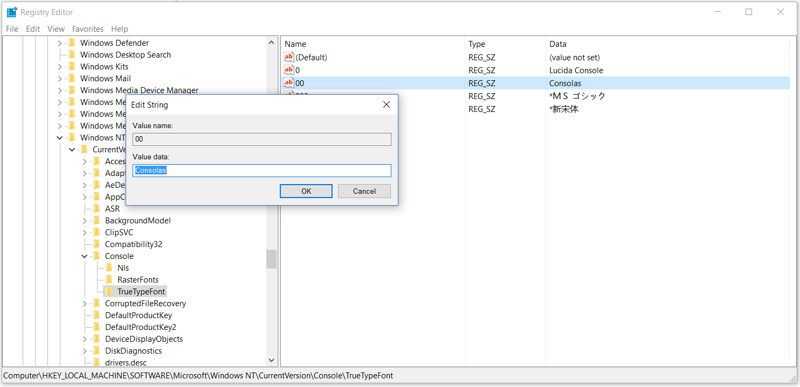
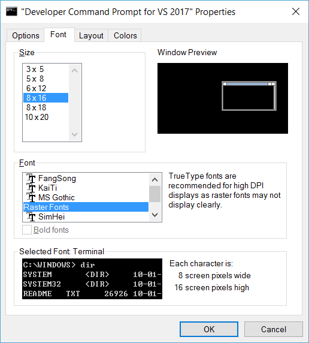
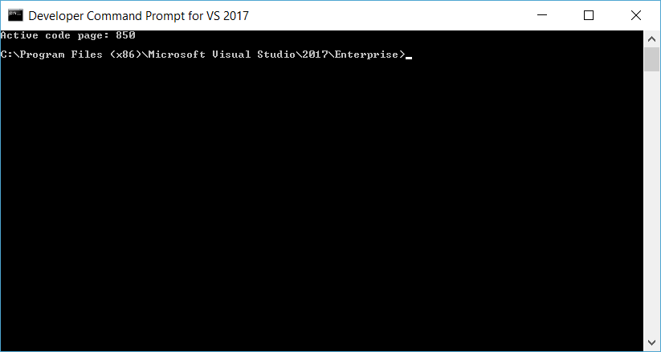
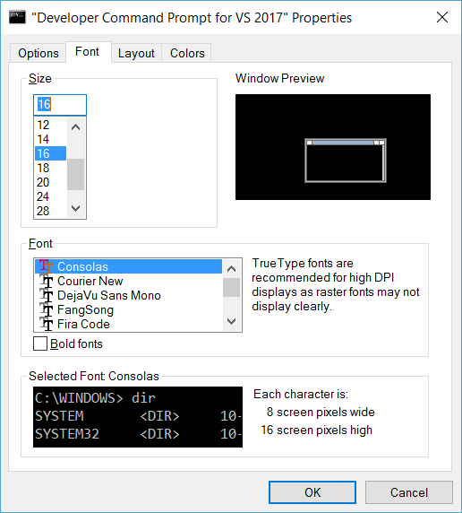
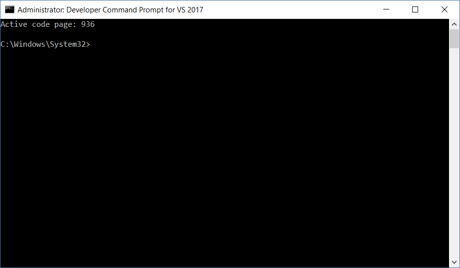

Using Consolas Font in CMD
Using
Developer Command Prompt for VS2017as an example
Remember to start it as Administrator
Adding Consolas font to Regedit
Open regedit
Goto HKLM\Software\Microsoft\Windows NT\CurrentVersion\Console\TrueTypeFont
Add a REG_SZ entry with the following contents:
Name = 00
Value = Consolas

NOTE: if there is already an entry for “00” you don’t need to change it. Simply use “000” instead.
Value has to match the font name as seen at the following registry key:
HKLM\Software\Microsoft\Windows NT\CurrentVersion\Fonts
[Optional] Log out and log in again / Restart
Changing CMD's Fonts
Just go to Properties > Font and select Consolas
If Consolas is not found:

Change code page to 850 or 65001:
chcp 850

Try again

Change code page back to 936 (or whatever it is originally)
chcp 936

Error Updating Shortcut

Solution: Restart command promt as Administrator and retry